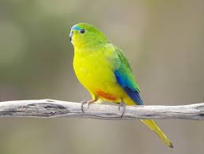

Loro Vientre Naranja
 El Loro de vientre naranja (Neophema chrysogaster) es una especie de ave en peligro crítico de extinción que habita en Australia, reproduciéndose en Tasmania y migrando a la costa sur continental para pasar el invierno.
Amenazas
La pérdida y degradación de su hábitat, la alteración de los regímenes de incendios, y la enfermedad Psittacine Circoviral Disease (PCD) son las principales amenazas.